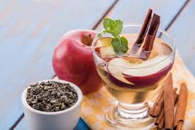
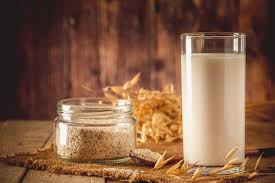
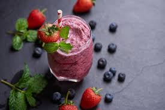
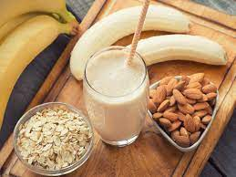
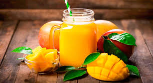
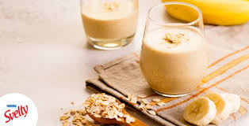
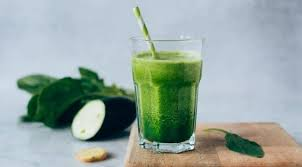

AGUA DE MANZANA CON CANELA
INGREDIENTES
Una manzana cortada en rebanadas
Dos varas cortadas de canela
Un litro de agua
METODO DE PREPARACION
Coloca las rebanadas de manzana en una jarra con agua, agrega dos varas de canela deja reposar en el refrigerador por una hora, sácala y sirve durante la comida o tómala a lo largo del día.
AGUA DE AVENA
INGREDIENTES
Una taza de avena integral
½ rama de canela
2 cucharadas de miel
1 litro de agua
METODO DE PREPARACION
Hierve la taza de avena junto con la rama de canela, deja reposar y agrega la miel luego cuela y enfría el líquido obtenido para disfrutar de todos los beneficios de la avena de forma refrescante.
JUGO VERDE DE GENGIBRE

INGREDIENTES
3 tazas de espinaca baby
½ pepino cortado en cubos
1 taza de piña cortada en cubos
½ litro de agua
1 trozo de jengibre fresco
METODO DE PREPARACION
En una licuadora agrega todos los ingredientes mencionados y revuelve hasta conseguir una mezcla homogénea. Te recomendamos prepararlo durante las mañanas para complementar tu desayuno.
SMOOTHIE DE BERRIES CON AVENA
INGREDIENTES
1 taza de frutos rojos
2 vasos de Bebida de Avena Orgánica
2 cucharada de Avena Integral
Un trozo de jengibre fresco en rebanadas
Miel de abeja o de agave al gusto
METODO DE PREPARACION
Con la ayuda de la licuadora, pon todos los ingredientes y mezcla. Cuando quede lista, sirve en un vaso o tarro. Esta receta puede sustituir a un desayuno completo gracias a la fibra y antioxidantes que posee.
BATIDO DE AVENA, ALMENDRAS, THAINI Y VAINILLA
INGREDIENTES
1 plátano congelado (o al menos, que esté muy frío)
1 cucharada de tahini
250 ml de bebida vegetal o de leche
50 gramos de copos de avena
20 gramos de almendras
20 gramos de almendras
1/3 cucharadita de extracto de vainilla
1 pellizco de canela
2 dátiles sin hueso o tu endulzante preferido si necesitas endulzar
METODO DE PREPARACION
Ponemos en el vaso de la batidora todos los ingredientes y batimos hasta que consigamos una textura sin grumos y todos los ingredientes estén bien integrados. Servir y tomar frío.
JUGO DE MANGO ESPECIADO
INGREDIENTES
250 ml de un yogur de tu elección
200 g de mango en trozos y congelado
100 ml de bebida vegetal o de leche
3 cardamomos
2 dátiles sin hueso
1 pellizco de jengibre rallado
1/5 de cucharita de esencia de vainilla
METODO DE PREPARACION
En un cazo pequeño, ponemos a calentar la leche o la bebida vegetal y añadimos las tres nueces de cardamomo ligeramente aplastadas. Cuando la leche vaya a romper a hervir, retiramos del fuego, tapamos y dejamos reposar 15 minutos. Transcurrido este tiempo, se filtra la bebida. Pon todos los ingredientes en el vaso de la batidora y bate hasta que el mango y los dátiles estén totalmente batidos y no queden trocitos ni grumos.
BATIDO DE BANANO
INGREDIENTES
1 Banano congelado
150 ml de leche de soya
4 cdas de yogurt griego congelado
2 cds avena en hojuelas
5 pasa
1 cucharada de linaza en polvo
METODO DE PREPARACION
Mezclamos todos lo ingredientes en una licuadora hasta tener todo bien batido. Puedes agregar canela en polvo si lo deseas .
LICUADO DE PEPINOS Y ESPINACA
INGREDIENTES
1 pepino
1 puñito de espinaca
1 naranja
1 apio
puedes agregar cereales de tu preferencia
METODO DE PREPARACION
Como primer paso picamos la espinaca, pepino y apio en trozos pequeños luego pelamos la naranja y la picamos y pomenos todo en la licuadora y le dejamos ir agua (un vaso aprox) agregamos cereales de tu preferencia y licuamos.